Andrew ID: skorada
Binary cross-entropy loss.
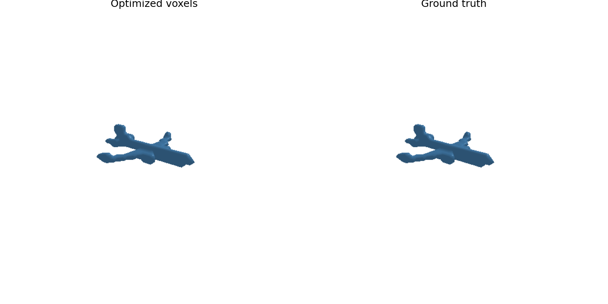
Bidirectional Chamfer loss.
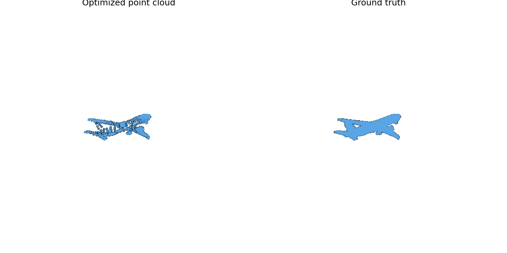
Chamfer loss with Laplacian smoothness regularization.
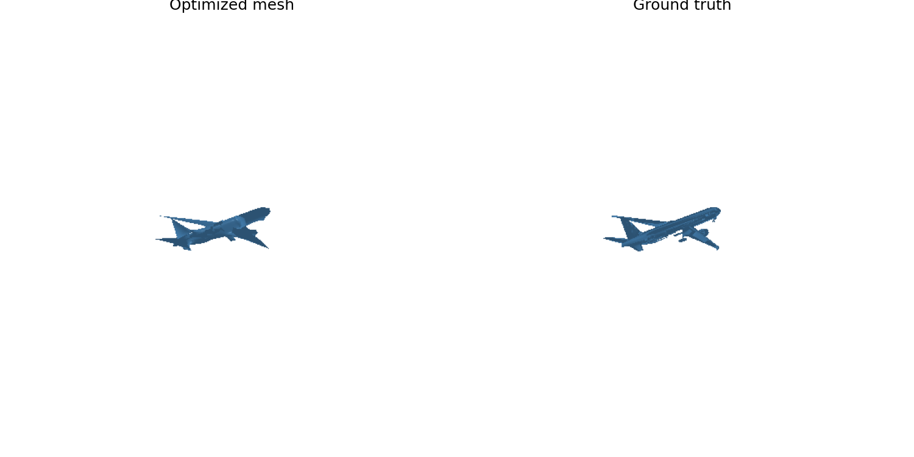
All models use a ResNet-18 image encoder and were evaluated on 678 test chairs. Metrics use 1,000 sampled points. The voxel result uses the best loss setting from Section 2.4.
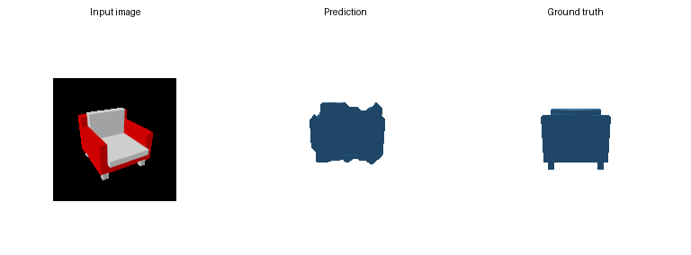
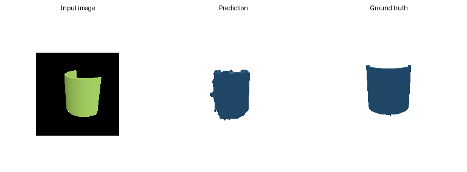
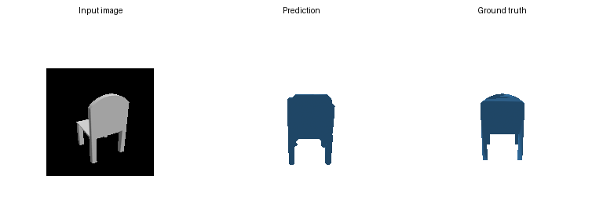
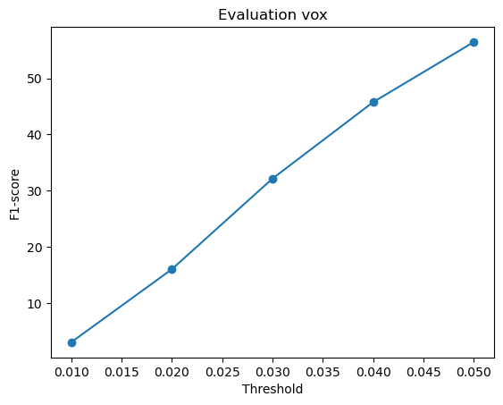
Mean F1@0.05: 56.48.
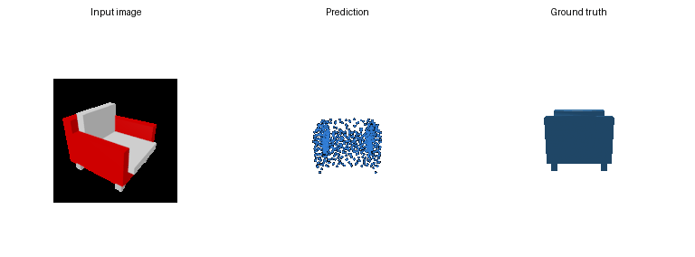
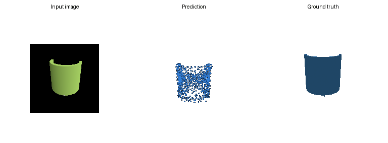
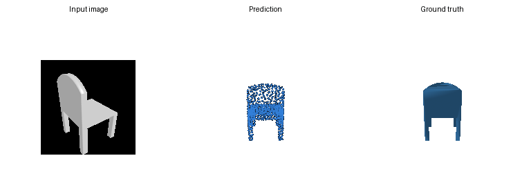
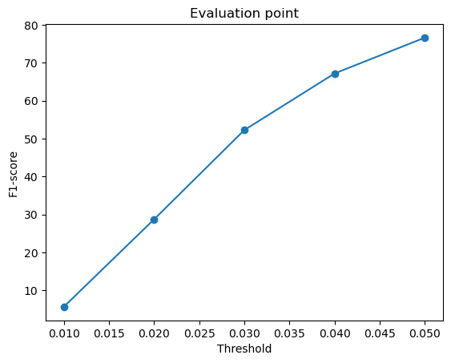
Mean F1@0.05: 76.62.
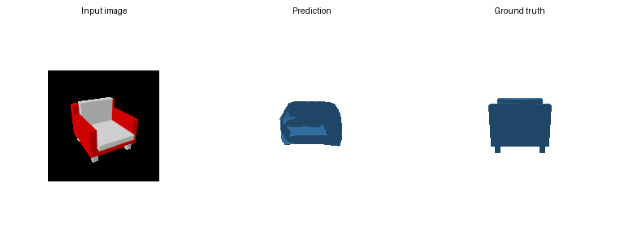
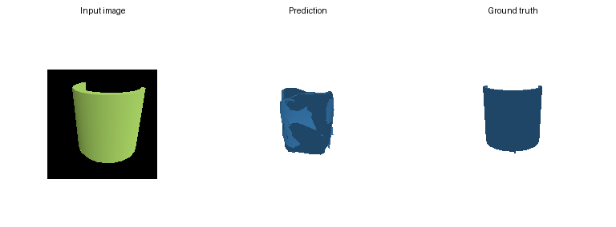
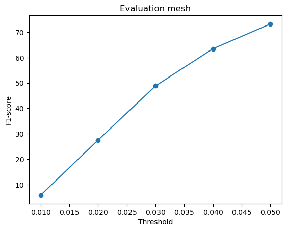
Mean F1@0.05: 73.23.
| Model | Precision@0.05 | Recall@0.05 | F1@0.05 | F1 gap from best |
|---|---|---|---|---|
| Voxel | 51.79 | 63.24 | 56.48 | -20.14 |
| Point cloud | 79.51 | 75.15 | 76.62 | 0.00 |
| Mesh | 73.61 | 73.46 | 73.23 | -3.39 |
The point-cloud model performs best at 76.62 F1. It is 3.39 points above the mesh model and 20.14 points above the voxel model; the mesh model is 16.75 points above the voxel model. Point clouds are trained directly with Chamfer distance, so their points can move freely toward the target surface, which closely matches this point-sampled evaluation. The mesh must deform a fixed sphere while preserving connectivity and smoothness, so it cannot place vertices as freely, but its continuous surface still gives balanced precision and recall. The voxel model is limited to a 32³ grid. Quantization merges nearby surfaces and often removes thin chair legs or creates blocky boundaries, so points sampled from its extracted surface are less likely to fall within the 0.05 distance threshold.
I fine-tuned the voxel model for 600 steps using BCE plus a soft Dice loss. I varied the Dice weight over 0.05, 0.10, and 0.20, using the same 100 test examples and random samples for each comparison. Their F1@0.05 scores were 56.33, 55.84, and 55.80. Weight 0.05 performed best. On the full 678-object test set it scored 56.48, improving the original model's 55.61.
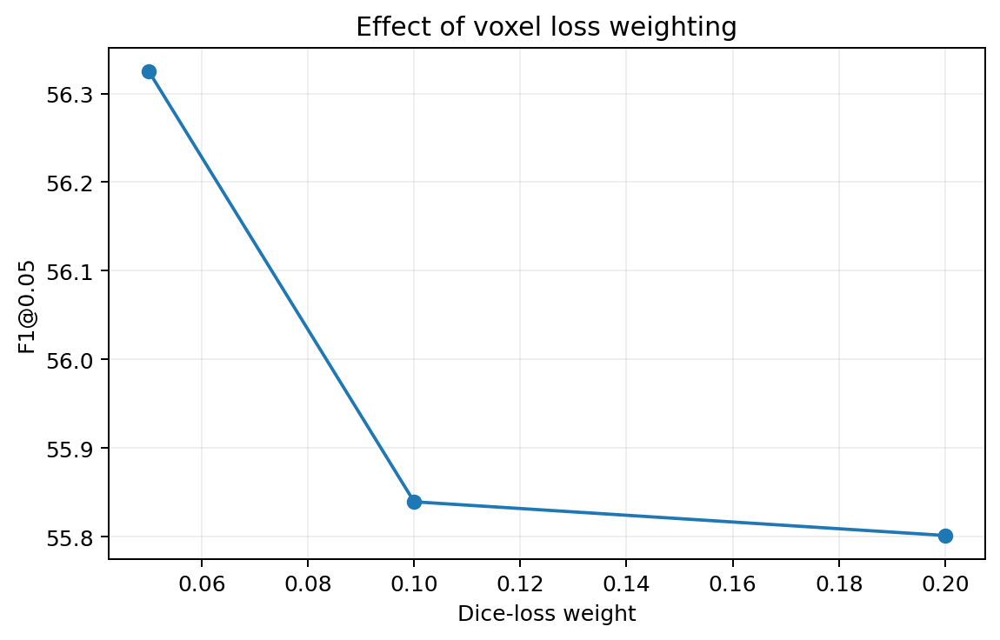
I extracted the 512-dimensional encoder feature for one view of every test chair and applied PCA. PC1 explains 40.3% of the feature variance and PC2 explains 5.8%. Each point below is one of the 678 test images, colored by the fraction of occupied voxels in its ground-truth shape.
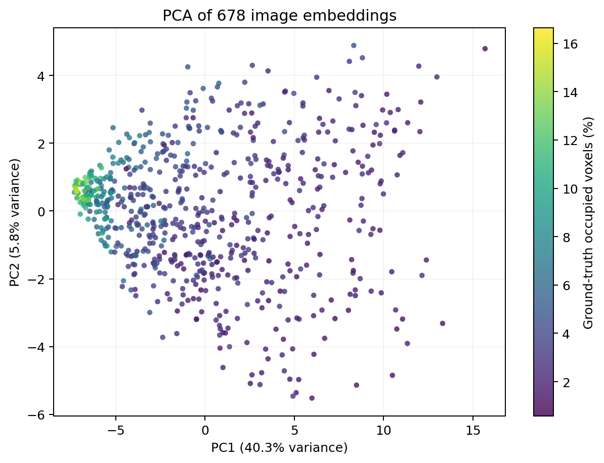
PC1 has a -0.674 correlation with occupied volume. The real images nearest five positions on this axis progress from bulky upholstered chairs toward thinner office and slatted chairs.
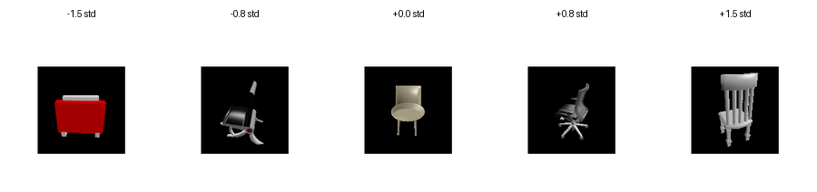
To isolate what the decoder reads from this direction, I held every other latent component at its dataset mean and changed only PC1. The rotating decoded shapes show the same transition: the solid armchair loses volume, the seat narrows, and distinct legs and a thin back emerge.
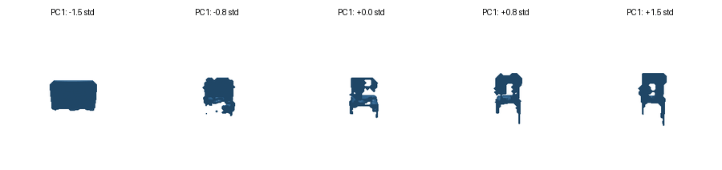
PC2 has a weaker 0.211 occupancy correlation and captures a different factor. Its nearby inputs move from low or reclined seats to tall upright backs, while the controlled traversal changes back height and seat-back proportions. The two directions therefore separate overall chair mass from a more specific pose and proportion change.
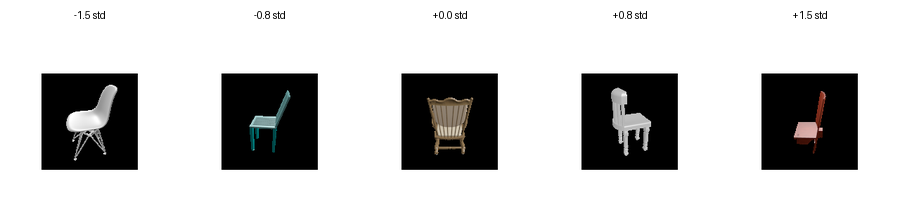
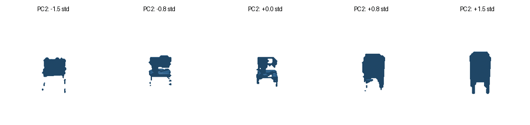
I compared the original voxel model trained only on chairs with a model trained on chairs, cars, and airplanes. Both models used the same architecture and were evaluated on the same rendered view of each of 100 held-out chairs. Surface points were sampled with matched random seeds.
| Training data | Precision@0.05 | Recall@0.05 | F1@0.05 |
|---|---|---|---|
| Chairs only | 51.48 | 61.65 | 55.67 |
| Three classes | 52.25 | 57.83 | 54.22 |
| Difference | +0.77 | -3.83 | -1.44 |
Adding two classes raises precision slightly but lowers recall substantially, producing a 1.44-point, or 2.6%, decrease in chair F1. This suggests that the broader model predicts more conservative surfaces: its points are slightly more likely to lie near the target, but it covers less of the complete chair.
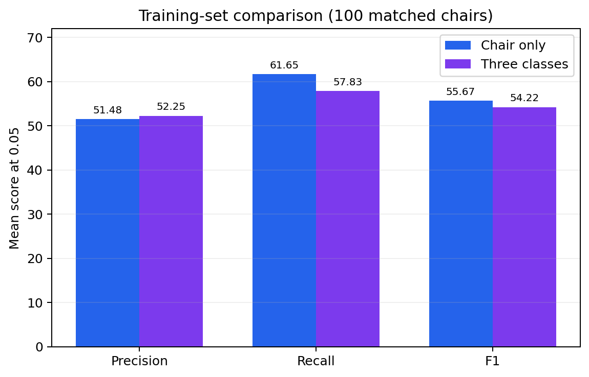
The matched examples show the same pattern. Both models recover the main mass of the upholstered chairs, although their 32³ outputs smooth the arms and legs. On the thin metal chair, the chair-only model retains a more continuous back and seat, while the three-class prediction fragments and leaves an isolated component. The multi-class training therefore does not improve chair reconstruction with this fixed-capacity decoder; sharing it across dissimilar categories appears to trade chair-specific coverage for slightly cleaner occupied regions.
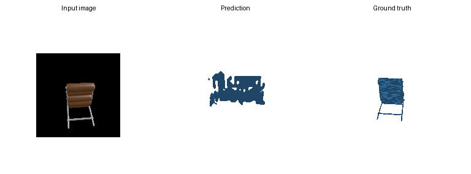
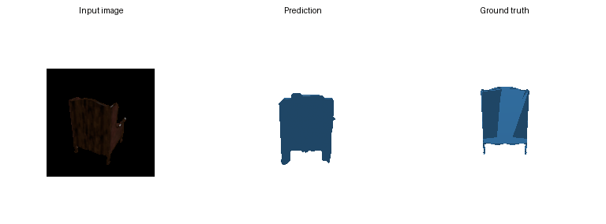
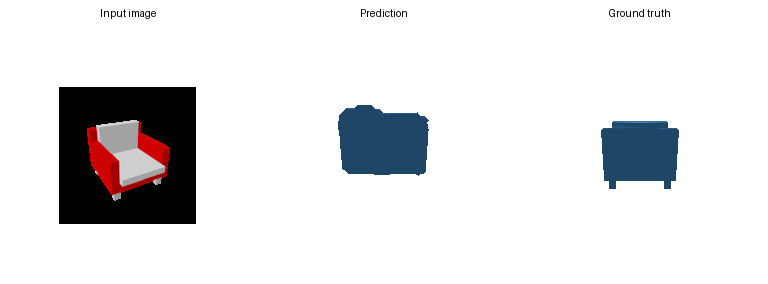
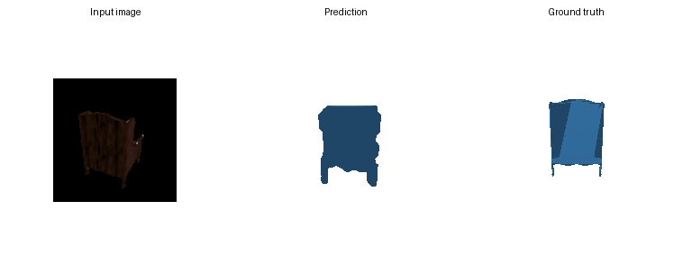